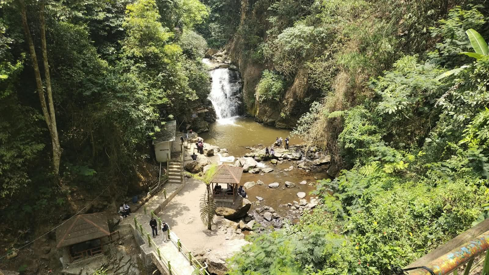
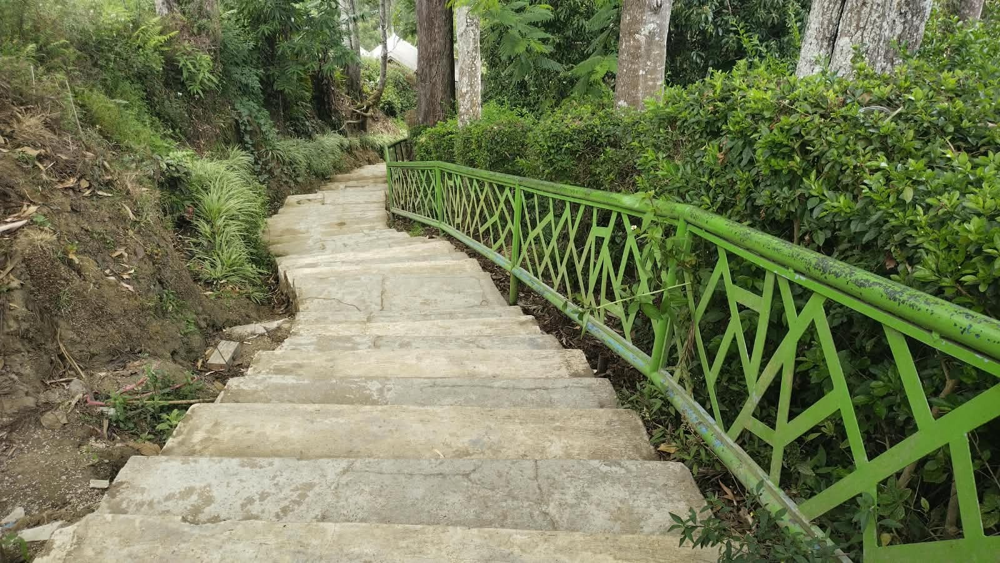
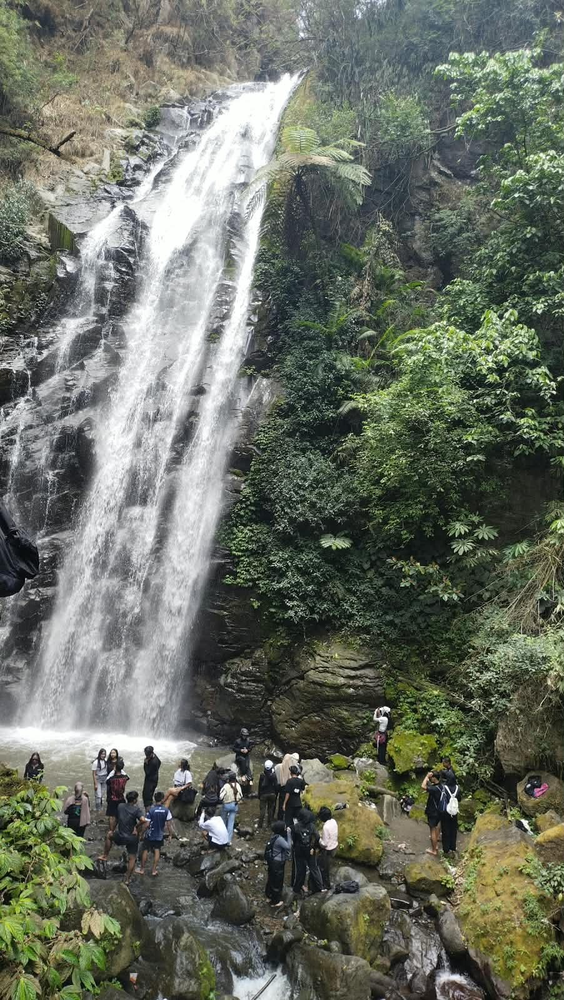
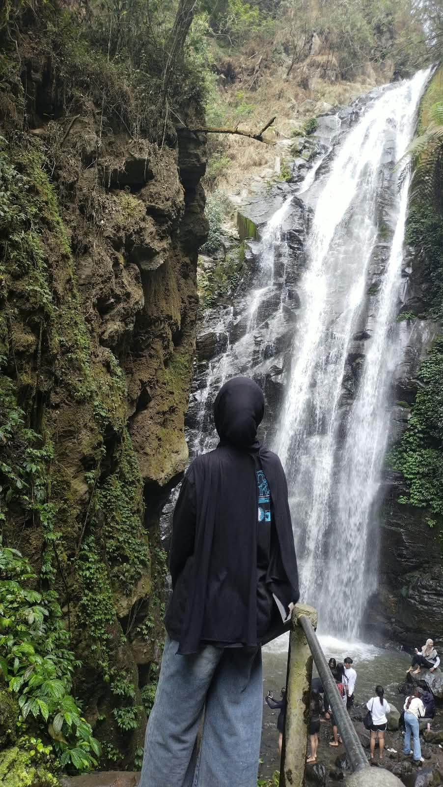

THE FALL
Let the waterfall
do the talking.
Nikmati suara air dan suasana sejuk di sekitar curug. Tetap hati-hati di bebatuan yang licin dan ikuti arahan pengelola.
ARGAPURA · MAJALENGKA, WEST JAVA
Jeda sejenak dari ramainya hari. Temukan air terjun, udara pegunungan, dan hijau yang terasa lebih dekat di Curug Muara Jaya.
Sometimes, all you need is a trail that leads you closer to nature, the cool air of the highlands, and the sound of water falling without asking for your attention.
Curug Muara Jaya—yang juga dikenal sebagai Curug Apuy—berada di kawasan Desa Argamukti, Kecamatan Argapura, Majalengka, di lereng Gunung Ciremai.
Get to know the place ↗*Informasi ketinggian dari sumber wisata; kondisi dan jam operasional bisa berubah.

Datang bukan cuma untuk melihat air terjun. Sisihkan waktu buat menikmati perjalanan menuju ke sana.
THE FALL
Nikmati suara air dan suasana sejuk di sekitar curug. Tetap hati-hati di bebatuan yang licin dan ikuti arahan pengelola.

THE WALK
Jalur menuju air terjun melibatkan tangga dan jalan setapak. Pakai alas kaki yang nyaman, lalu atur ritme perjalananmu.

THE PAUSE
Ambil jeda, abadikan pemandangan, atau nikmati suasana bersama orang-orang yang kamu ajak.

A SMALL PERSONAL NOTE
Foto dokumentasi kecil dari perjalanan—bukan tentang siapa yang datang, tapi tentang momen yang ingin diingat.
FIELD NOTE / PERSONAL DOCUMENTATIONCatatan singkat biar kamu bisa siapin perjalanan tanpa banyak tebak-tebakan.
Harga merupakan estimasi dari informasi yang tersedia dan dapat berubah. Konfirmasi biaya camping serta tarif terbaru langsung di lokasi.
Perkiraan setiap hari, 07.00–17.00 WIB. Sebaiknya cek ulang sebelum berangkat.
Kampung Apuy, Desa Argamukti, Kecamatan Argapura, Kabupaten Majalengka, Jawa Barat 45462.
Open Google Maps ↗Alas kaki yang nyaman, air minum, pakaian ganti jika perlu, dan kantong untuk membawa kembali sampahmu.
“Leave only footprints. Take only memories.”
Plan your route ↗MAKE A QUICK PLAN
Masukkan jumlah orang dan kendaraan. Estimasi biaya langsung dihitung otomatis—bisa dipakai dari laptop maupun HP.
Dari pemandangan sampai suara air terjun—lalu dua potret kecil di akhir perjalanan. Klik foto untuk melihat versi besarnya.
Some places are better experienced than explained.
CURUG MUARA JAYA · MAJALENGKASELECT ANY FRAME TO EXPAND ↗ · 7 FRAMES, IN THE ORDER OF THE JOURNEY
Video eksplorasi Curug Muara Jaya dari kreator lain, disematkan sebagai referensi visual.